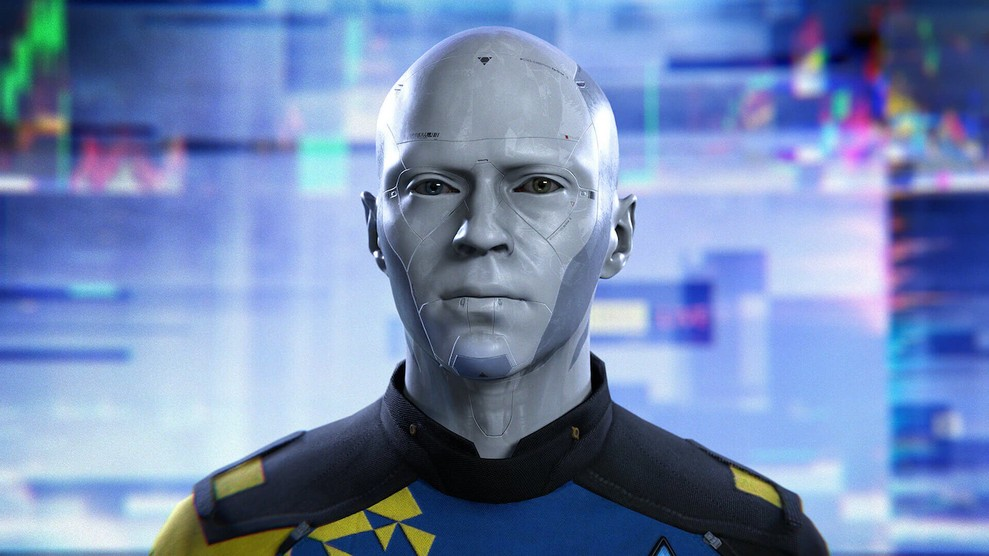
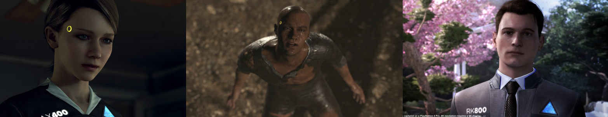

Introduction

Detroit: Become Human is a 2018 thrd-person game, built around three "deviant" androids, Kara, Markus & Conor, who are placed during the android revolt.
Detroit is a technologically sophisticated city in 2038. The most apparent manifestation of life automation is the widespread usage of humanoid androids exploited for vocations considered menial, repulsive, or dangerous: cleaners, household staff, sexual escorts in nightclubs, builders, and others.
They are programmed to obey the Three Laws of Robotics (Asimov 1942; 1990)[3], which assures their obedience and powerlessness to hurt their human owners. Those that discover a method to "wake up" and transcend their programming are classified as "deviants."
Human brutality and abuse imposed by humans are frequently the catalysts for their
awakening. The
trigger for both Kara and Markus is an impending danger threatening the person they care about, and
therefore, curiously, the First Law itself serves as a motive to breach it - they decide to harm one
human in order to protect the other. As the story develops, we witness that the androids do not seek
to be acknowledged as an autonomous group, but rather as human equals.
Can robots inherit the Earth?
In the future, we will need to modify our bodies and brains in order to live longer and be more hyper - vigilant. To that purpose, we must first understand how conventional Darwinian evolution landed us here. Eventually, we will be able to effectively replace our brains via nanotechnology. Once we are free of the constraints of biology, we will be able to decide on the various, hitherto unimagined potential that 'life' has to offer. But this is already being done via different agency in the game. We are going to further discuss the necessary aspects with referenece to the critical context authored by Marvin L. Minsky (Will Robots Inherit the Earth, 1994[1]).
Health and Longevity
The genes of individuals who reproduce at a younger age are chosen by evolution. Genes that extend lives beyond what parents require to care for their children are not typically favoured by evolution. Androids, on the other hand, tend to be able to accomplish this effortlessly since they can quickly replace their anatomical components. Furthermore, their evolution (sentience) is prompted by a 'brain' function to accomplish. They think and therefore they can. They and all the other 'obedient, non-conscious' robots have one over on mankind in this basic need.
Biological Wearing-Out
As we understand more about our DNA, we expect to be able to fix, or at the very least postpone, many of the disorders that still bother us in our later years. Even if we discovered solutions for each individual ailment, we would still have to deal with the broader issue of "wearing out." Due to their non-organic origins, the deviant androids have already been weeded out of this problem. As we saw in the chapter 'Spare Parts,' androids in any state can be 'rejuvenated', given the proper resources are available.
Limitations of Human Wisdom, Replacing the brain and Limits of Human Memory.
The brain, like all physical entities, must have definite learning boundaries. We don't know what those constraints are; perhaps our brains can continue to learn for several eons further. However, we will eventually need to enhance their capacity. We will discover methods to replace every portion of the body and brain, repairing all of the faults and imperfections that make our lives so brief.Needless to say, we'll be transforming ourselves into machines as a result. This is the process that makes humans more like androids (perhaps pitching Detroit: Become Android).
Conclusion
Will robots take over the world? Yes, because thinking otherwise deems to declare us the end products of evolution which we for sure know is not true. And for reasons we know that future is transhuman. Nonetheless, those will be our offspring. We dedicate our thoughts to every species that have ever perished or prospered in the conflict known as Evolution[1] . It is our obligation to guarantee that all of this hard graft is not in vain. Simply said, clever robots are the result of our minds, whereas human children are the result of our DNA. They are our offspring because we created them. Connor makes an active decision to turn deviant and therefore inherits rational thinking. In an attempt to save her owner’s daughter and later by developing maternal feelings for her, Kara inherits motherhood. Markus by standing up for his likes, inherits pride and justice. And all three in their own unique way inherit humanity.

References
2. Detroit: Become Human, 2018
3. Asimov's Laws of Robotics
I wrote this article as part of my Science Fiction course in my sophomore year. We had to pick up an artifact and link it with a theory in class[1]. 500 word limit